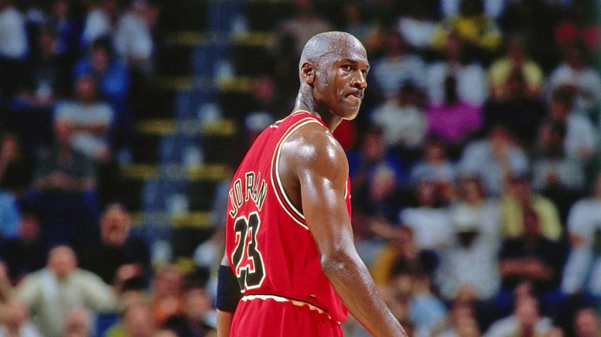

ESTADISTICAS
| Año | Equipo | PJ | Min | Pts | %TC | 3 p% | Reb | Ast | Rob | Blq |
|---|---|---|---|---|---|---|---|---|---|---|
| 2002 | Wizards | 82 | 37.0 | 20.0 | 44.5 | 29.1 | 6.1 | 3.8 | 1.5 | 0.5 |
| 2001 | Wizards | 60 | 34.9 | 22.9 | 41.6 | 18.9 | 5.7 | 5.2 | 1.4 | 0.4 |
| 1997 | Bulls | 82 | 38.8 | 28.7 | 46.5 | 23.8 | 5.8 | 3.5 | 1.7 | 0.5 |
| 1996 | Bulls | 82 | 37.9 | 29.6 | 48.6 | 37.4 | 5.9 | 4.3 | 1.7 | 0.5 |
| 1995 | Bulls | 82 | 37.7 | 30.4 | 49.5 | 42.7 | 6.6 | 4.3 | 2.2 | 0.5 |
| 1994 | Bulls | 17 | 39.3 | 26.9 | 41.1 | 50.0 | 6.9 | 5.3 | 1.8 | 0.8 |
| 1992 | Bulls | 78 | 39.3 | 32.6 | 49.5 | 35.2 | 6.7 | 5.5 | 2.8 | 0.8 |
| 1991 | Bulls | 80 | 38.8 | 30.0 | 51.9 | 27.0 | 6.4 | 6.1 | 2.3 | 0.9 |
| 1990 | Bulls | 82 | 37.0 | 31.5 | 53.9 | 31.2 | 6.0 | 5.5 | 2.7 | 1.0 |
| 1989 | Bulls | 82 | 39.0 | 33.6 | 52.6 | 37.6 | 6.9 | 6.3 | 2.8 | 0.7 |
| 1988 | Bulls | 81 | 40.2 | 32.5 | 53.8 | 27.6 | 8.0 | 8.0 | 2.9 | 0.8 |
| 1987 | Bulls | 82 | 40.4 | 35.0 | 53.5 | 13.2 | 5.5 | 5.9 | 3.2 | 1.6 |
| 1986 | Bulls | 82 | 40.0 | 37.1 | 48.2 | 18.2 | 5.2 | 4.6 | 2.9 | 1.5 |
| 1985 | Bulls | 18 | 25.1 | 22.7 | 45.7 | 16.7 | 3.6 | 2.9 | 2.1 | 1.2 |
| 1984 | Bulls | 82 | 38.3 | 28.2 | 51.5 | 17.3 | 6.5 | 5.9 | 2.4 | 0.8 |
| Trayectoria | 1,072 | 38.3 | 30.1 | 49.7 | 32.7 | 6.2 | 5.3 | 2.3 | 0.8 |

"Simplemente ... Una leyenda."